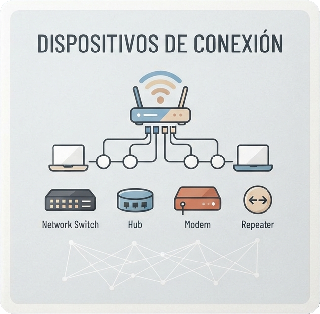
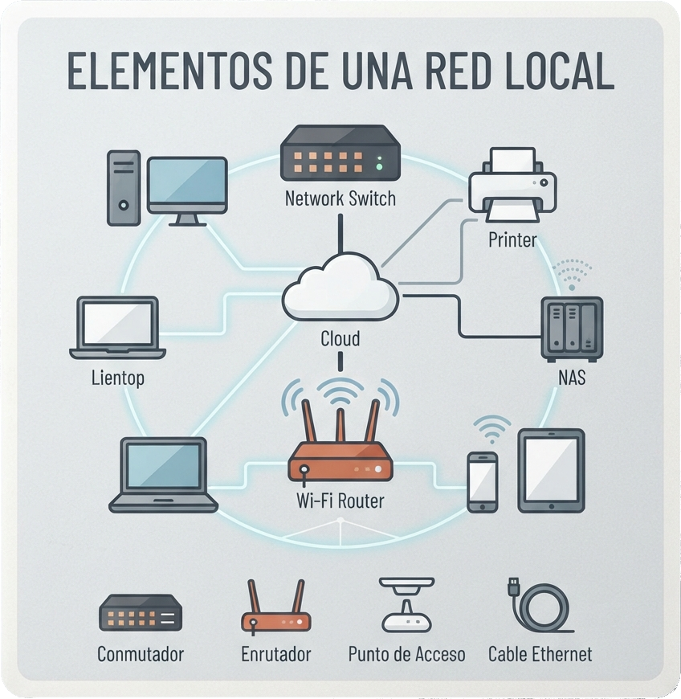
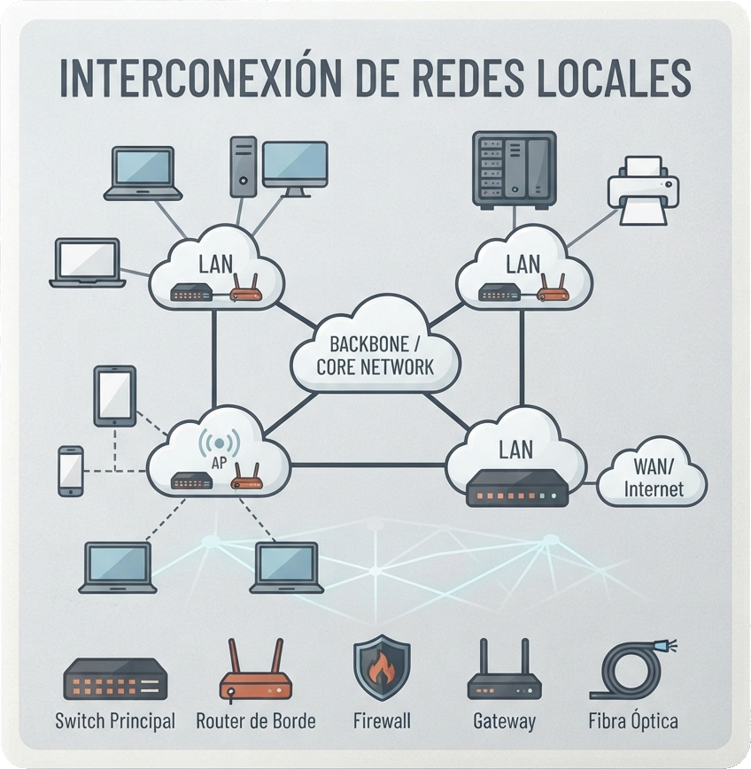
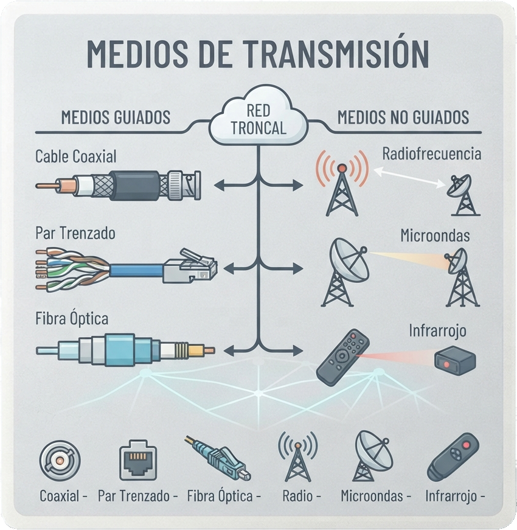
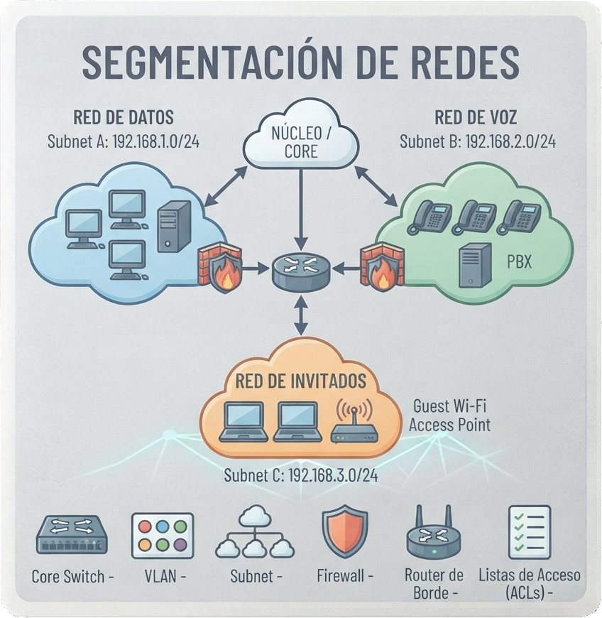
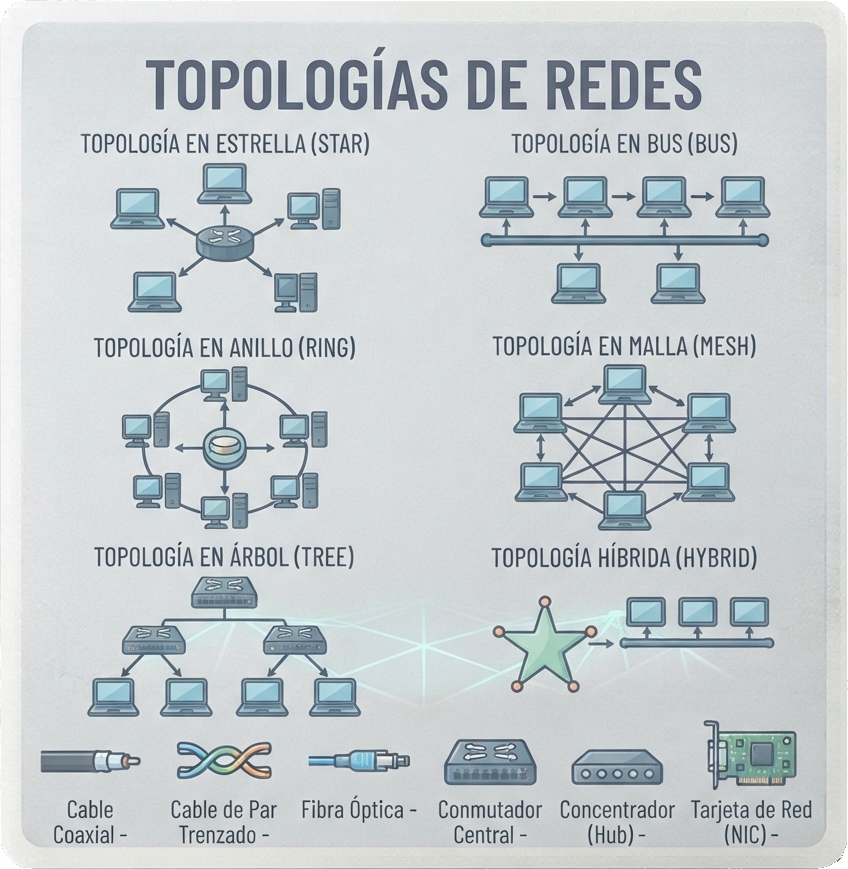
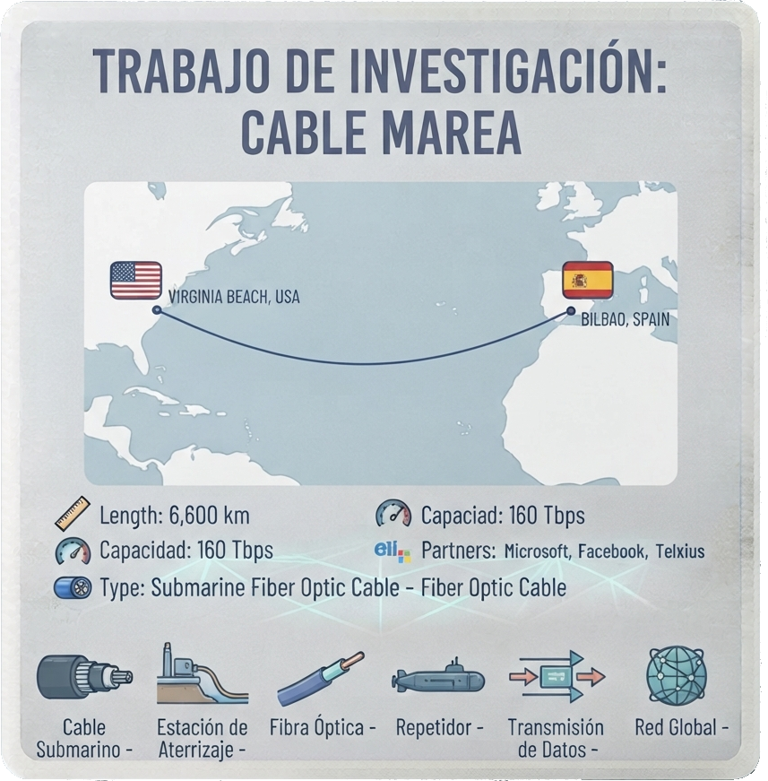

Guía sobre los dispositivos de conexión de red, adaptadores, tarjetas, equipos de interconexión, sistemas de seguridad perimetral, cortafuegos, DMZ y proxy.
Ver Documento
Guía sobre la infraestructura de una red local, puestos de usuario y cuartos de comunicaciones, cableado y canalización, rack, paneles de parcheo y herramientas de instalación.
Ver Documento
Guía sobre la interconexión de redes locales, protocolos de encaminamiento, configuración de tablas de rutas, puertas de enlace y gestión en equipos y routers para Windows y Linux.
Ver Documento
Guía sobre medios de transmisión de red, hilos metálicos UTP y STP, cable coaxial, fibra óptica monomodo y multimodo, conectores, cableado estructurado, certificación y normas de seguridad.
Ver Documento
Guía sobre segmentación de redes y subnetting, cálculo de subredes, direcciones IP de red, host y broadcast, CIDR, VLSM y gestión en IPv6. (Creado en grupo.)
Ver Documento
Guía sobre tipos de redes (PAN, LAN, MAN, WAN), computación en la nube, diferencias entre Internet, Intranet y Extranet, tecnologías de acceso y topologías de red físicas y lógicas.
Ver Documento
El primer enlace transatlántico entre Europa y Estados Unidos, detallando su capacidad, propietarios, estación de amarre, instalación, seguridad y monitorización.
Ver Documento